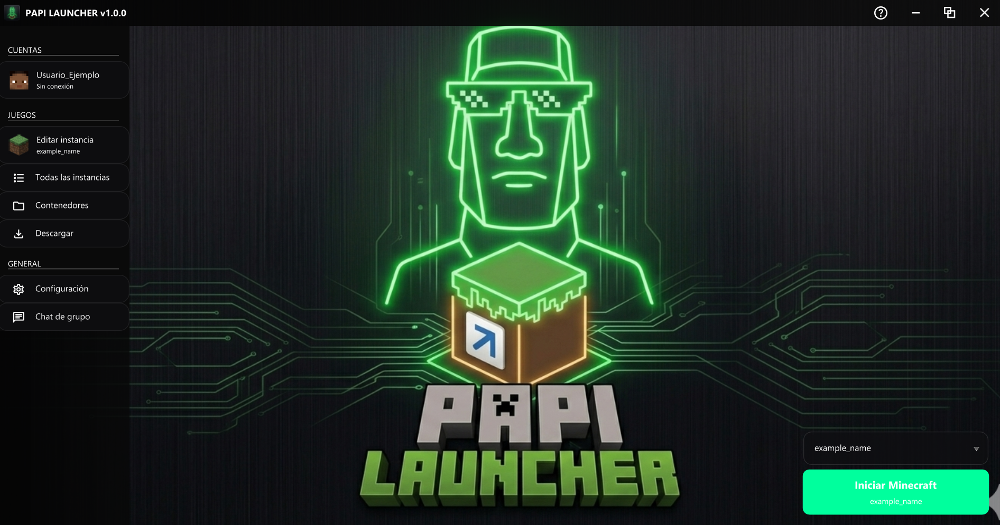

6 Temas Neón
Void Green, Blue Launcher, Cyan Pulse, Electric Purple, Magenta Glow y Acid Lime. Todos con efecto glassmorphism.
Vista previa del Launcher

Interfaz moderna, intuitiva y diseñada para que pases menos tiempo configurando y más tiempo jugando.
Acerca de PAPI LAUNCHER
PAPI LAUNCHER es un launcher de Minecraft de código abierto (GPL v3) basado en Hello Minecraft! Launcher (HMCL) creado por huangyuhui. Mantenido por endersan17, este fork se enfoca en:
Características
PAPI LAUNCHER incluye todo lo esencial para una experiencia Minecraft completa, sin publicidad, sin telemetría y con total transparencia.
Void Green, Blue Launcher, Cyan Pulse, Electric Purple, Magenta Glow y Acid Lime. Todos con efecto glassmorphism.
Panel de 3 columnas, búsqueda con debounce, perfiles de lanzamiento por contenedor y validación automática de resource packs.
Modo offline activado por defecto. Soporte para authlib-injector y cuentas Microsoft próximamente.
Windows (x86-64, ARM64), Linux (x86-64, ARM64, RISC-V, LoongArch64), macOS (x86-64, ARM64) y FreeBSD.
Inglés, Español, Chino, Japonés, Ruso, Ucraniano y Chino Clásico. Traducción completa de la interfaz.
3 canales de actualización (Stable, Beta, Nightly) y Discord Rich Presence integrado para mostrar qué juegas.
Desarrollo
01
Ajustes continuos para mejorar estabilidad, arranque y gestión de versiones.
02
Trabajo en aislamiento de entornos para instalaciones más organizadas y flexibles.
03
Interfaz moderna desarrollada con JavaFX, enfocada en claridad y uso diario.
Arquitectura Técnica
Tecnologías
Especificaciones Técnicas
FAQ
Sí, Papi Launcher es un proyecto de código abierto pensado para la comunidad.
Sí, el launcher está pensado para funcionar en Windows.
Sí, incluye compatibilidad con Forge, Fabric y NeoForge para gestionar experiencias con mods.
No, no es necesario tener una cuenta premium de Minecraft para usar el launcher, tristemente aun no puedes poner cuentas de microsoft ¡Pero estamos trabajando en ello!
Enlaces
Agradecimientos
endersan17 — Creador del fork PAPI LAUNCHER
huanghongxun — Creador original de HMCL
SoyStormy — Contribuidor y beta tester principal
Todos los contribuidores de HMCL
Licencia: GPL v3


🚀 Únete a la Comunidad
Papi Launcher
Servidor Oficial de Discord
Chat de Grupo HMCL
Foro / Grupo en Bilibili
Haz clic en los botones para unirte directamente
o copia los enlaces para compartirlos.